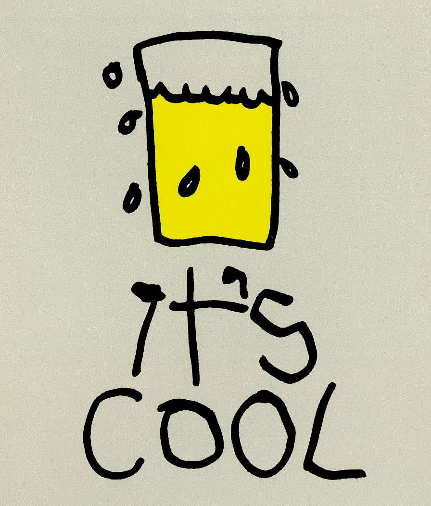
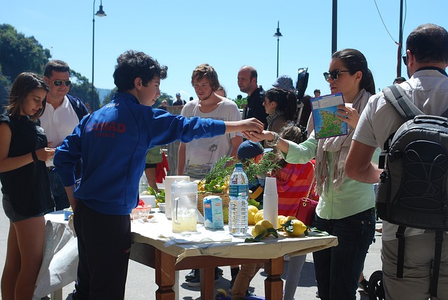

À propos

David's Lemonade était une entreprise américaine qui a répendu ce que tous les enfants américains ont connus dans les années 50, les stands de limonade à 5 cents.
En effet, pour gagner de l'argent de poche, les enfants montaient des stands de limonade.

Le succès fût énorme, mais malgré celà, l'entreprise à aujourd'hui disparue. Toutefois, nous souhaitons faire renaitre l'idée, à notre façon.
La citronnade est une boisson saine, mettant en avant le goût unique des différents agrumes frais et bio de production locale, elle est donc tout à fait dans l'air du temps. De plus, les producteurs adhérents seront présents lors des dégustations pour défendre la qualité de leurs produits .